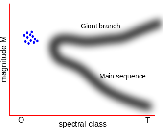

DIBS

Blue Straggler
Blue stragglers are stars found in globular and open clusters that appear to be younger, brighter, and bluer than the rest of the stars in the cluster. An HR diagram of a globular cluster will reveal that these stars appear to be “lagging” behind the rest of the stars in the cluster (see the image below). 47 Tucane is a well studied globular cluster with at least 21 blue stragglers (Parada et al. 2016).

An HR diagram of a globular cluster, showing the location of blue stragglers in comparison to the main sequence branch and giant branch. Blue stragglers "lag" behind the main sequence and live in a region populated by younger, hotter stars.
It is well established that the stars in a given globular cluster formed around the same time. Blue stragglers are more massive than other stars in their cluster, which makes them brighter and bluer, signatures of young stars. These stars must have acquired extra mass throught their lifetime somehow. Globular clusters are very dense environments, meaning that interactions between stars are fairly common (Leiner et al. 2016). There are three popular scenarios of how blue stragglers obtained their extra mass:
Mass transfer in binary systems (Gosnell et al. 2014).
Stellar collisions (Leonard 1989).
Kozai mechanism: Binary mergers influenced by a third close by star (Perets & Fabrycky 2009).